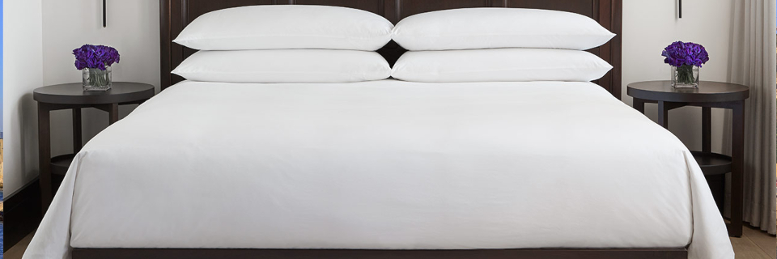

Events
Main Event - 25.09.2019
The wedding will take place in Jaffa (also known as Yaffo), an ancient port city in Tel Aviv known for its historic and ancient buildings and old narrow streets, its authentic markets, the hip and buzzling nightlife and some of the region's best restaurants.
Venue
The Lawrence is an events site located among the picturesque alleys of old Jaffa and the colorful flea market.
Agenda
19:00 - Reception
20:00 - Ceremony
21:00 - Dinner
22:00 - Party!
Pre Party - 24.09.2019
On the day before we will meet on the beach for sunset drinks and getting more familiar with the place and the people.
We'll keep you updated on the time and place.
Accommodation

We recommend that you book an AirBnB while in Tel Aviv. Hotels are more expensive and airbnbs are generally more spacious and a good way to experience life as a local.
In general try to stay as close to the beach, north to Jaffa, and south to the Yarkon river.
To get the general vibe, we've gathered some nice hotels in great locations.
Our hotel for 24/25.09
The Market House Hotel, located next to the Jaffa's historical Clock Tower and the famous flea market, takes inspiration from the unique and authentic atmosphere of ancient Jaffa.
10% off with promo code: WEDD19
The Brown Beach House boutique hotel in Tel Aviv marks the arrival of the leading boutique hotel collection "Brown Hotels" to the city's coastal strip, which is dominated by the large hotel chains.
Characterized by a distinctive modern design that is as stunning to the senses as it is welcoming to the soul, THE POLI HOUSE design boutique hotel in Tel Aviv is the embodiment of the urban eccentricities, diversity and personalities that shape the city’s eclectic culture and design.
The Rothschild Hotel, located in the heart of Tel Aviv's beautiful and prestigious Rothschild Boulevard. The hotel renowned as the most romantic hotel in Tel Aviv.
Nestled on a picturesque city square, The Norman, the only luxury boutique hotel in Tel Aviv, lies in the heart of the White City; Tel Aviv’s world-famous UNESCO heritage site of historic Bauhaus architecture buildings. Perfectly situated next to Rothschild Boulevard and Tel Aviv’s best cultural attractions, The Norman is comprised of 2 classic buildings, beautifully restored to their unique elegance.
The heart of the Lillenbloom, close to the Boulevard Rothschild Street, this charming vintage hotel sure to seduce you during a stay. It is in a warm atmosphere that welcomes you the team hotel to fully live your stay in Tel Aviv. In a calm and serene atmosphere close to the hustle and bustle of boulevard.
8% off with promo code: IRENEANDAMOS
Food & Drinks
Israel has one of the most exciting dining scenes in the world, and it is just starting to be discovered as a food destination like New York or London.
“Modern Israeli cuisine is interesting and exciting and it is happening mainly in Tel Aviv,” says Israeli-British chef Yotam Ottolenghi. “But it’s a bigger story than that. It’s also about the interaction between Palestinian cooking and the traditions of the Jewish immigrants, and you can experience that most clearly in restaurants in Jerusalem.”
We've gathered some of the finest restaurants and bars in Tel Aviv, also easily accessible via the Restaurants and Bars curated lists on Google Maps.
Restaurants
Thai House was established in 1996 by the couple Yariv and Sonan (Lek) Melili. The restaurant introduces cuisine based on traditional food from the north-eastern Isan region, combining typical dishes and classical street food from southern Thailand to provide an authentic journey into local cuisine.Whether it is the fresh coconut milk, scooped out on-the-spot or the use of unique Thai vegetables that grow in our local farm, you are in for an unparalleled dining experience.
The CoffeeBar is the first restaurant of R2M Corporation. It was opened in 1994, and loyally serves its guests since. Scattered among four rooms, a bar and an outdoors porch, there are about 150 seats in the restaurant. The divided rooms, which, along with the elegant black-and-white design and the hugh flowers vases - the trademark of the place - make an intimate and cosy setting.
Hotel Montefiore’s restaurant is a mandatory culinary experience for travelers to Tel Aviv and locales alike. French cuisine under a Vietnamese spell a delectable culinary identity based upon seasonal, local ingredients and imported goods carefully curated by the hotel’s kitchen.
Vegans beware, this is not your haunt. Carnivores, start licking your lips. M25 is positioned 25 meters from their newcomer butcher shop called Meat Market, nestled amongst the historic market butchers. Selling only local cuts, you will find yourself sitting alongside the city's top chefs coming to get their fix pre or post service. The menu is streamlined and focused on, well, Israel's best meat.
Located in the Machane Yehuda Market, Azura is famous for its Turkish-inspired delicacies. From hummus, kebabs, and rice to boiled potatoes and red beets, Azura prepares every dish the old-fashioned way. You may find yourself having to wait in line at lunchtime, but that only shows you how popular this stop is.
Taizu – Asia Terranean Kitchen opened in 2013 by renowned Chef Yuval Ben Neriah. The kitchen brings a mix of Asian street food and the Mediterranean kitchen, featuring local twists on authentic street food dishes from five south east Asian countries, inspired by Chef Ben Neriah’s travels throughout South-East Asia.
The flowers, the music, the art hanging on the walls and of course – the food on your plate, have been carefully entwined to create a harmonious and unique experience. As soon as you enter the world of Toto, you leave reality behind, embarking on a sensuous, passionate, enchanting, exciting, gratifying and comforting voyage, led by Yaron Shalev and his crew.
Topolopompo is a fire kitchen restaurant inspired by the exotic culinary traditions of the East. Its fire is omnipresent not only in every single dish but also physically as a prominent and active participant in space.
Inside the Mendeli Street Hotel, the kitchen of Mashya is filled with the spicy aroma of mace, the local spice that the restaurant is named for and which inspired chef Yossi Shitrit’s reinvented traditional cuisine. Mashya is a restaurant with a focus on design, whose bright, clean look is trimmed with the rough and rugged textures of locally-sourced natural materials, helping it blend with the spirit of the nearby outdoor market.
Restored school chairs, and old ‘Kibbutz’ Formica tables sit between contemporary black lacquered tables and Modernist chairs to create a rowdy dialogue between old and new. Mansura’s menu focuses on local ingredients, with an emphasis on fresh fish, including fillet of barracuda served on a bed of green vegetables, and smaller plates such as calamari on polenta.
If you are looking for a restaurant that encapsulates Tel Aviv, this is it! With its hipster environment and delicious take on middle-eastern food by top Israeli celebrity-chef Eyal Shani, this is the perfect place to chill and meet friends after a hard day at work or on the beach.
A market restaurant in its pure sense, inspired by the fresh, seasonal ingredients from the adjacent Carmel Market. Atmosphere is casual and prices are quite high for the look of the place.
Claro’s Med Kitchen (as in Mediterranean), travels through the Mediterranean countries: Spain, France, Italy, Turkey, Greece, Lebanon and Israel, and is presented in the Shmueli relaxed cooking philosophy. The menu, taking the “Farm to Table” approach, is rich in fruits and vegetables, featuring seasonal products from the best local produce.
Bars
Hidden within the imperial hotel, the imperial craft cocktail bar is a creation of veteran bartenders of the city, to create a temple to the lost art of the cocktail. The kitchen is asian-colonial inspired, and the music varies from swing jazz at happy hour to surf and rock n' roll come late-night (when most of the city's bartenders come cruising around).
223 is a different, colourful experience. 223 provides their guests with a delicious, high-quality product alongside the highest level of hospitality.
Dedicated to blow your minds out of this world with groundbreaking content and vibes. Bar, Club, Art Gallery, Restaurant and beyond.
La Otra is a Mexican Caribbean inspired cocktail bar from the makers of the Imperial craft cocktail bar. La otra's cocktails are focused mainly on caribbean spirits and has the largest Rum, Mezcal and Tequila selection in the country.
Kuli Alma is a music and art-focused nightlife institution nestled into the creative crux of south Tel Aviv. Having opened in March 2014, Kuli Alma focuses on bringing out-of-the-box content to a far-reaching audience of insatiable night owls, music lovers and culture enthusiasts, whether embedded within the local creative community or first-time visitors to Tel Aviv’s thriving nightlife landscape.
Prices can vary in Israeli restaurants, especially during the "Business Lunch" hours, usually between 12-15.
Tipping in Israel is common and around 10%-20%. Tips are usually left in cash, as there is no option to add a tip to your card after paying a bill.
Attractions
Israel, a Middle Eastern country on the Mediterranean Sea, is regarded by Jews, Christians and Muslims as the biblical Holy Land. Its most sacred sites are in Jerusalem. Within its Old City, the Temple Mount complex includes the Dome of the Rock shrine, the historic Western Wall, Al-Aqsa Mosque and the Church of the Holy Sepulchre. Israel's financial hub, Tel Aviv, is known for its Bauhaus architecture and beaches. To the north lie Nazareth and the freshwater Sea of Galilee, important New Testament sites in the life of Jesus. Haifa offers vistas from Mount Carmel and manicured, terraced gardens. Down the coast are the ruins of Caesarea, King Herod’s Roman port. The 1st-century-B.C. clifftop fortress Masada overlooks the Dead Sea, known for its spas and mineral-heavy water. In the south, hiking trails cross the Negev Desert. At the southern tip, Eilat is a Red Sea resort with coral reefs and high-rise hotels.
We've gathered some of the great places you can visit, also easily accessible via the curated list on Google Maps.
South
In amongst all the attractions the south of Israel offers, the Negev’s natural resorts and parks stand out as some of the country’s most beautiful landscapes. Its dry and arid conditions make for some wonderful day&night adventures.
In the days of the Great Revolt, the last of the rebels against Rome entrenched themselves at Masada, and turned their desperate fight into a symbol of the struggle for freedom. Because of the enthralling historic events that took place on the mountain, and the archaeological finds that have been revealed there, UNESCO has declared Masada National Park a World Heritage Site.
Lowest point on Earth, a salt-rich lake surrounded by desert beaches, mineral spas & oases.
A diverse network of trails marked by natural pools, waterfalls & scenic viewpoints of the Dead Sea.
Religious pilgrims have been traveling to Jerusalem for centuries, yet you don’t have to share their zeal in order to appreciate this city’s profound cultural and historical significance. Plan on seeing the major sights, but also leave plenty of time to walk through the streets and simply immerse yourself in the daily life of such an ancient and revered place.
Surrounded by ancient walls, the Old City is home to holy sites such as the Western Wall, Dome of the Rock Islamic shrine, and the Church of the Holy Sepulchre, which dates to the 4th century. Shops and markets selling prayer shawls, rosaries, and ceramics fill busy alleys, while food stalls serve falafel, pita, and fresh-squeezed juice. In a medieval citadel, the Tower of David museum chronicles the city’s history.
Mahane Yehuda Market often referred to as "The Shuk", is a marketplace (originally open-air, but now partially covered) in Jerusalem, Israel. Popular with locals and tourists alike, the market's more than 250 vendors sell fresh fruits and vegetables; baked goods; fish, meat and cheeses; nuts, seeds, and spices; wines and liquors; clothing and shoes; and housewares, textiles, and Judaica.
Memorial complex to Holocaust victims with guided tours of a museum displaying historical exhibits.
Tel Aviv, a city on Israel’s Mediterranean coast, is marked by stark 1930s Bauhaus buildings, thousands of which are clustered in the White City architectural area.
Established, open-air market featuring local produce, spices & other grocery items, plus home goods.
Former dock turned waterfront development with a boardwalk plus restaurants, stores & nightclubs.
Cultural & culinary center at an ancient city & fishing port dating from the 18th century BCE.
An eclectic mix of stalls & shops selling clothing, furniture & home goods, plus cafes & bars.
The White City refers to a collection of over 4,000 buildings built in a unique form of the Bauhaus or International Style in Tel Aviv from the 1930s by German Jewish architects who immigrated to the British Mandate of Palestine after the rise of the Nazis.
Artsy Neve Tzedek has avant-garde design stores, fashion boutiques and handicraft shops, as well as a weekly farmers’ market in HaTachana, a restored railway station. Trendy European restaurants sit alongside stylish bistros, and many of the area’s al fresco cafes turn into live jazz bars and cocktail lounges at night. The Suzanne Dellal Center showcases contemporary dance, while surfers head to beaches nearby.
North
The North of Israel is often slightly overshadowed by some of the other places to visit in Israel. But, with so much beauty, history, culture, and, of course, adventure awaiting you in the North of Israel, it shouldn’t be that way, and no matter what your interests, you should have a problem narrowing down what to do in the north, rather than finding things to do.
Haifa is a northern Israeli port city built in tiers extending from the Mediterranean up the north slope of Mount Carmel.
Gardens with 19 terraces of geometric flower beds, climbing to the domed Bahai shrine on Mt Carmel.
Acre (Akko) is a port city in northwest Israel, on the Mediterranean coast. It’s known for its well-preserved old city walls.
Caesarea is a town on Israel's Mediterranean coast. It’s known for Caesarea National Park, which includes a large Roman amphitheater and the historic port
Nazareth is a city in Israel with biblical history. In the old city, the domed Basilica of the Annunciation is, some believe, where the angel Gabriel told Mary she would bear a child.
The Mount of Beatitudes is a hill in northern Israel, in the Korazim Plateau. It is where Jesus is believed to have delivered the Sermon on the Mount.
Capernaum was a fishing village established during the time of the Hasmoneans, located on the northern shore of the Sea of Galilee.
Popular Christian pilgrimage destination on the River Jordan, said to be where Jesus was baptized.
Tips
Israel is a colorful, intense, fun, and usually quite safe for tourists of all types.
Click here to learn more about israeli weddings.
We've also gathered a few tips to help you during your visit:
Airport
Don't forget your passports need to be updated with the expiration date a minimum of at least 6-months after your trip.
As you know, security is important so be prepared for checks before your departure and give yourself plenty of time (arrive around 2h30 before your flight time) and after you arrive as well. Make sure to bring our wedding invitation and details of your hotel reservations and return flight with you in case asked about the reason for your travel.
We will be on call in case you need to reach us – easiest way is to reach us by Whatsapp or Facetime.
Our phone numbers:
Amos
European: +31636036081
Israeli: +972526595533
Irene
European: +31622614760
Transportation
Transportation is quite complex but there are a few ways to get around:
From & To Airport
Taxis
At the arrival hall, follow the signs for the taxi area. It is on the left as you exit the terminal
building behind the exit for the train station. There is a steward who can assist you with any questions.
The price for the trip to Tel Aviv is fixed. Give the steward your destination and he will confirm the
price, It should be about NIS 150-170 (about £38-45 or $42-48) depending on the number or persons
and luggage. Make sure your driver is aware that you have been given a price before starting your
journey.
Train
The trains in Israel can be quite complicated and unpredictable.
However the train from the airport is quite comfortable and can get you to several central stations on the outskirts of Tel Aviv and Jerusalem.
Tickets can be bought at the automated terminals at the entrance to the train station accessible from the terminal hall.
Rental
Parking and traffic can be a real challenge in Israel. If you have a rental, we recommend to use parking garages when possible.
Inside the City
Make sure the taxi uses the meter and there's no need to tip.
If you plan to use taxis to get around in Tel Aviv, we recommend you download Gett
on your phone. Uber now also works the same way: you will be able to book through
Uber a normal taxi.
You can also hail a taxi on the street or ask your hotel or restaurant to book one for
you.
Be careful, bike lanes are not well established, and so you'll need to ride on the road and sometimes even the sidewalk.
As you walk around the city, you'll probably notice the electric scooters passing you by. As cities in Israel are quite small and flat, renting one these could be a great solution for a quick trip to the beach.
Dress Code
Day to Day
Simply put, there isn't one! It's too damn hot anyways. Just dress lightly and make sure you have something long with you for visiting holy sites and some chilly evenings.
For The Wedding
Israeli weddings are casual.
You can dress up or down as you prefer. Just know it will be warm and we will be dancing!
Men tend to wear a nice pair of jeans or slacks with a button shirt, sometimes a jacket but no ties.
Women often wear a dress or slacks with a nice shirt. In this case it will be June so something light is best.
Communications
WiFi
There is wi-fi almost everywhere you go. In malls, in coffee shops, in hotels and Airbnbs.
Local SIM Card
Since Israel is not part of the european union your mobile plan won't work. We recommend that you buy an Israeli sim card at the airport if you do not want to incur excessive carrier and Internet costs.
Finance
Payments
Markets and local places might only accept cash.
It's a good idea to bring cash that you can exchange at any exchange office in the city.
Yoy can also use your debit card to take cash in the local currency straight from an ATM.
If you have a credit card that is good for abroad transactions and doesn't charge a fee every time you use it, then you can use credit cards in lots of places.
The local currency is New Israeli Shekels (ILS) or "Shekels" for short.
Tipping
Tipping in Israel is usually between 10%-20%.
Tips must be left in cash, as there is no option to add a tip to your card after paying a bill.
No need to tip cab drivers.
RSVP
The Wedding
Please let us know if you can join us on the day of our wedding.
RSVP
Jaffa Day Trip
Our friend Shahar is a certified and amazing tour guide and he would love to take you around the interesting parts of Jaffa. The trip would be planned for the first half of the day before the wedding, Tuesday 24.09.2019 at 09:00-15:00, so let us know if you want to join.
RSVP to day trip in Jaffa